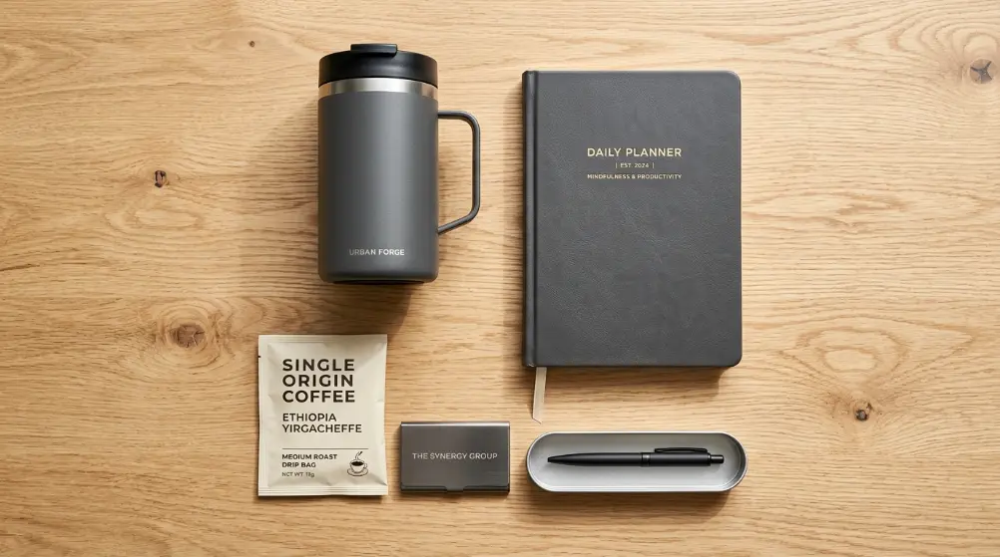
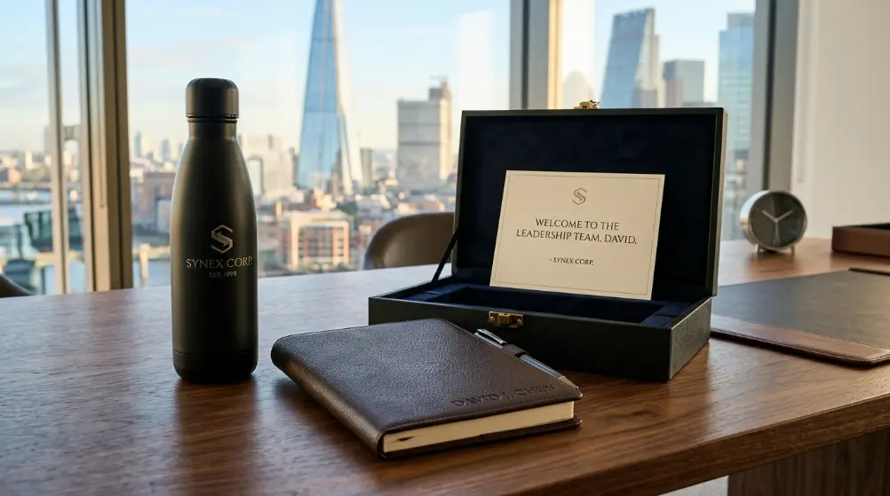

Isi corporate gift set yang paling disukai biasanya memadukan mug atau tumbler premium, notebook custom, alat tulis eksklusif, dan snack sehat berkualitas. Kombinasi ini memberi kesan profesional sekaligus fungsional bagi karyawan maupun klien perusahaan.
Apa Saja Komponen Utama dalam Isi Corporate Gift Set?
Komponen utama isi corporate gift set umumnya terdiri dari item fungsional harian seperti tumbler atau mug, alat tulis, notebook, serta pelengkap berupa snack atau kartu ucapan bermerek. Setiap komponen dipilih agar relevan dengan aktivitas kerja sehari-hari.
Secara umum, isi gift set korporat dapat dikelompokkan menjadi tiga kategori besar.
Pertama, kategori item minum dan makan seperti tumbler, mug keramik, atau toples snack yang digunakan setiap hari di meja kerja.
Kedua, kategori alat kerja seperti notebook, pulpen, flashdisk, atau organizer meja yang mendukung produktivitas.
Ketiga, kategori pelengkap seperti kartu ucapan, kemasan eksklusif, dan aksesori tambahan yang memperkuat kesan personal dari perusahaan pengirim.
Pemilihan kombinasi dari ketiga kategori tersebut sebaiknya disesuaikan dengan tujuan pemberian gift set, apakah untuk apresiasi karyawan, penyambutan klien baru, atau souvenir acara korporat seperti seminar dan gathering tahunan.
Item Wajib untuk Isi Gift Set Standar
Untuk paket standar, item yang hampir selalu direkomendasikan adalah tumbler atau mug, notebook polos maupun custom, dan satu jenis pulpen premium.
Ketiga item ini memiliki tingkat penggunaan tinggi sehingga logo perusahaan akan terus terlihat dalam jangka waktu lama, memberikan efek promosi berkelanjutan tanpa terasa berlebihan.
Item Tambahan untuk Paket Premium
Pada paket yang lebih premium, perusahaan dapat menambahkan produk seperti tas kanvas, payung lipat, powerbank, atau hampers makanan sehat dalam kemasan eksklusif.
Penambahan item ini biasanya digunakan untuk momen khusus seperti akhir tahun, ulang tahun perusahaan, atau penghargaan pencapaian target kerja.
Mengapa Isi Gift Set Perlu Disesuaikan dengan Penerima?
Isi gift set perlu disesuaikan dengan penerima karena kebutuhan karyawan internal berbeda dengan ekspektasi klien eksternal, sehingga kesesuaian isi paket akan memengaruhi seberapa besar kesan positif yang diterima.
Karyawan cenderung menghargai barang yang praktis dan bisa digunakan setiap hari di kantor, misalnya alat tulis, tumbler, atau merchandise casual seperti kaos dan topi.
Sebaliknya, klien dan mitra bisnis biasanya lebih menghargai kesan eksklusif, sehingga pemilihan bahan premium seperti kulit sintetis berkualitas tinggi, kemasan kayu, atau kotak custom logo menjadi pertimbangan penting.
Perbedaan penerima juga memengaruhi pilihan pesan pada kartu ucapan yang disertakan.
Untuk karyawan, pesan biasanya bernada apresiasi atas kontribusi dan kerja keras. Untuk klien, pesan lebih menekankan rasa terima kasih atas kepercayaan dan harapan kerja sama jangka panjang.
Kombinasi Item Fungsional untuk Kebutuhan Kantor Sehari-hari
Kombinasi item fungsional menjadi fondasi dari isi corporate gift set karena barang yang sering dipakai akan memperpanjang durasi eksposur brand perusahaan di lingkungan kerja penerima.
Alat Tulis dan Aksesori Meja Kerja
Alat tulis seperti pulpen premium, sticky notes custom, dan organizer meja termasuk kategori yang paling sering dipilih karena harganya relatif terjangkau namun tetap terlihat profesional saat diberi sentuhan custom logo.
Notebook dengan sampul kulit sintetis atau kanvas juga menjadi favorit karena kesannya elegan sekaligus fungsional untuk mencatat kebutuhan rapat maupun agenda harian.
Minuman dan Snack Premium
Tumbler stainless dan mug keramik hampir selalu masuk dalam daftar isi gift set karena tingkat pemakaiannya tinggi di lingkungan kantor.
Selain itu, penambahan snack sehat seperti granola bar, kacang panggang, atau teh dan kopi kemasan eksklusif memberi nilai tambah tanpa membuat total anggaran membengkak secara signifikan.

Kombinasi tumbler, notebook kulit, dan aksesori meja menjadi pilihan utama isi gift set korporat.
Berapa Kisaran Budget Ideal untuk Corporate Gift Set?
Kisaran budget corporate gift set sangat bervariasi tergantung jumlah item, kualitas bahan, dan tingkat personalisasi, sehingga perusahaan sebaiknya menentukan anggaran per unit terlebih dahulu sebelum memilih kombinasi produk.
Secara umum, perusahaan dapat membagi anggaran menjadi tiga tingkatan. Tingkat ekonomis biasanya berisi satu hingga dua item fungsional dengan kemasan sederhana, cocok untuk souvenir acara berskala besar seperti seminar atau workshop.
Tingkat menengah menggabungkan tiga hingga empat item dengan kemasan menarik, ideal untuk apresiasi karyawan rutin.
Tingkat premium menghadirkan kombinasi item berkualitas tinggi dengan kemasan custom logo penuh, cocok untuk klien VIP atau momen penting perusahaan.
Penentuan budget idealnya juga mempertimbangkan frekuensi pemberian.
Jika gift set diberikan secara rutin, misalnya setiap kuartal, anggaran per unit sebaiknya lebih terjangkau agar program apresiasi dapat berjalan berkelanjutan tanpa membebani keuangan perusahaan.
Personalisasi dan Custom Logo sebagai Nilai Tambah
Personalisasi seperti pencetakan logo perusahaan, nama penerima, atau pesan khusus pada kemasan mampu mengubah barang sederhana menjadi gift set yang terasa eksklusif dan sulit dilupakan.
Teknik personalisasi yang umum digunakan antara lain cetak sablon pada tumbler dan tas, ukiran laser pada produk kayu atau kulit, serta bordir pada produk kain seperti topi dan tas kanvas.
Setiap teknik memiliki karakteristik tampilan berbeda, sehingga pemilihannya perlu disesuaikan dengan bahan dasar produk agar hasil akhir tetap rapi dan tahan lama.
Selain logo, penambahan nama penerima secara individual pada notebook atau tumbler juga semakin diminati karena memberi kesan bahwa perusahaan benar-benar memperhatikan setiap individu, bukan sekadar membagikan barang secara massal.
Kapan Waktu Terbaik Memberikan Corporate Gift Set kepada Karyawan dan Klien?
Waktu terbaik memberikan corporate gift set adalah pada momen strategis seperti akhir tahun, hari raya keagamaan, ulang tahun perusahaan, penyambutan klien baru, dan pencapaian target kerja tertentu.
Pemberian pada akhir tahun umumnya menjadi momen paling umum karena bertepatan dengan evaluasi kinerja tahunan dan perayaan pergantian tahun.
Momen hari raya seperti Lebaran dan Natal juga menjadi kesempatan populer untuk mempererat hubungan dengan klien maupun karyawan melalui hampers atau parcel korporat.
Selain momen rutin tahunan, perusahaan juga dapat memberikan gift set pada momen non-rutin seperti peluncuran produk baru, penandatanganan kerja sama, atau perayaan pencapaian target penjualan.
Momen semacam ini memberi kesan bahwa penghargaan diberikan secara tulus, bukan hanya rutinitas tahunan semata.
Perbandingan Isi Gift Set untuk Karyawan vs Klien
Perbandingan isi gift set untuk karyawan dan klien terletak pada tingkat formalitas kemasan dan jenis item yang dipilih, di mana klien umumnya menerima paket dengan kesan lebih eksklusif dibanding karyawan.
Untuk karyawan, kombinasi item yang sering dipilih cenderung praktis dan casual, seperti tumbler, kaos polo, topi, atau tas ransel ringan yang dapat dipakai sehari-hari baik di kantor maupun luar kantor.
Kemasan yang digunakan juga cenderung lebih sederhana namun tetap rapi.
Untuk klien dan mitra bisnis, kombinasi item biasanya lebih formal, seperti set alat tulis premium, hampers makanan dalam kemasan kayu atau kotak custom logo, serta produk kulit seperti dompet atau tempat kartu nama.
Kemasan yang digunakan umumnya lebih detail, sering dilengkapi pita, kartu ucapan tulisan tangan, atau segel logo perusahaan untuk menegaskan kesan eksklusif.

Personalisasi custom logo dan nama penerima memberikan nilai tambah eksklusif pada gift set korporat.
Kesimpulan
Menentukan isi corporate gift set yang tepat memerlukan pertimbangan matang terhadap penerima, momen pemberian, dan budget yang tersedia.
Kombinasi item fungsional seperti tumbler, notebook, dan alat tulis tetap menjadi pilihan aman, sementara personalisasi custom logo mampu meningkatkan nilai eksklusivitas paket secara signifikan.
Bagi perusahaan di Jakarta yang ingin memberikan kesan profesional sekaligus berkesan kepada karyawan dan klien, mempercayakan kebutuhan Souvenir Kantor Jakarta kepada tim yang berpengalaman akan memastikan setiap detail, mulai dari pemilihan produk hingga kemasan, dikerjakan dengan standar kualitas terbaik.
Hubungi tim kami sekarang untuk konsultasi gratis mengenai isi gift set yang paling sesuai dengan kebutuhan perusahaan Anda.
Pelajari lebih lanjut inspirasi produk pada artikel Ide Isi Corporate Gift Set untuk Apresiasi Karyawan, Souvenir Kantor Elegan untuk Mitra Bisnis, dan Isi Corporate Gift Set Custom Logo untuk Citra Brand.
Referensi umum mengenai konsep merchandise korporat dapat dipelajari lebih lanjut melalui sumber terbuka seperti Wikipedia - Promotional Merchandise.
FAQ
Apa itu corporate gift set?
Corporate gift set adalah kumpulan barang bermerek perusahaan yang diberikan kepada karyawan, klien, atau mitra bisnis sebagai bentuk apresiasi, promosi, atau penguatan hubungan kerja sama.
Berapa jumlah item ideal dalam satu paket gift set?
Jumlah item ideal umumnya berkisar antara dua hingga lima produk, tergantung budget dan tujuan pemberian, agar paket tetap terasa bernilai tanpa berlebihan.
Apakah isi gift set untuk karyawan dan klien harus berbeda?
Sebaiknya berbeda, karena karyawan lebih menghargai barang fungsional sehari-hari, sedangkan klien cenderung menghargai kesan eksklusif dan kemasan yang lebih formal.
Bagaimana cara memesan souvenir kantor Jakarta untuk kebutuhan gift set?
Perusahaan dapat menghubungi tim kami untuk konsultasi kebutuhan, pemilihan produk, personalisasi logo, hingga proses pengiriman ke lokasi kantor.
Apakah custom logo membutuhkan minimum jumlah pemesanan?
Ketentuan jumlah minimum pemesanan custom logo dapat bervariasi tergantung jenis produk dan teknik personalisasi yang dipilih, sehingga sebaiknya dikonsultasikan langsung sesuai kebutuhan perusahaan.
Lihat juga: Souvenir Kantor Elegan untuk Mitra Bisnis yang Berkesan, Gift Set Budget 100 Ribu untuk Acara dan Seminar Kantor, dan Ide Corporate Gift Set Budget 100 Ribuan yang Tetap Mewah.